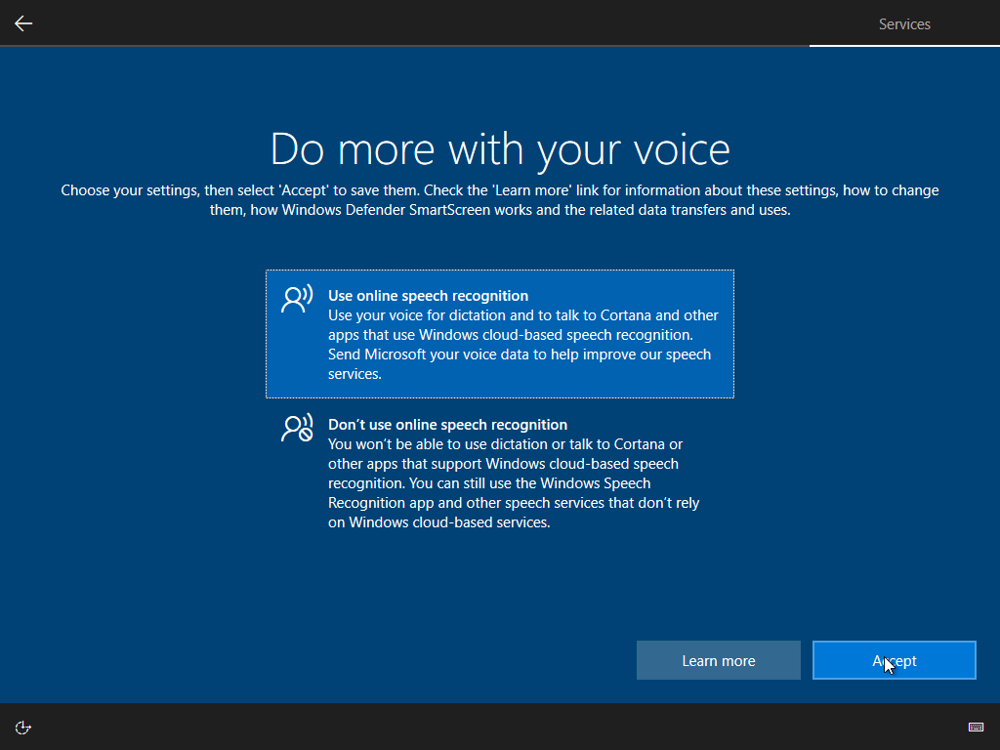
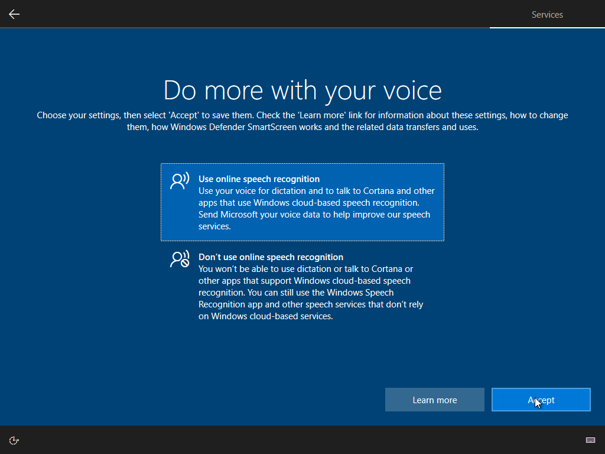
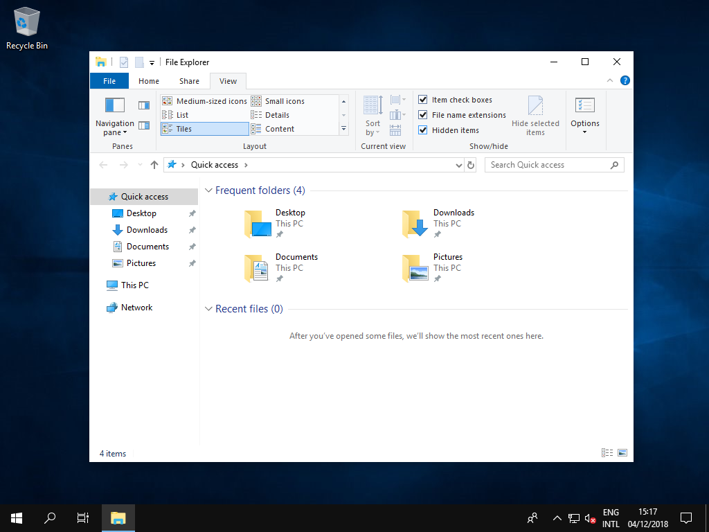
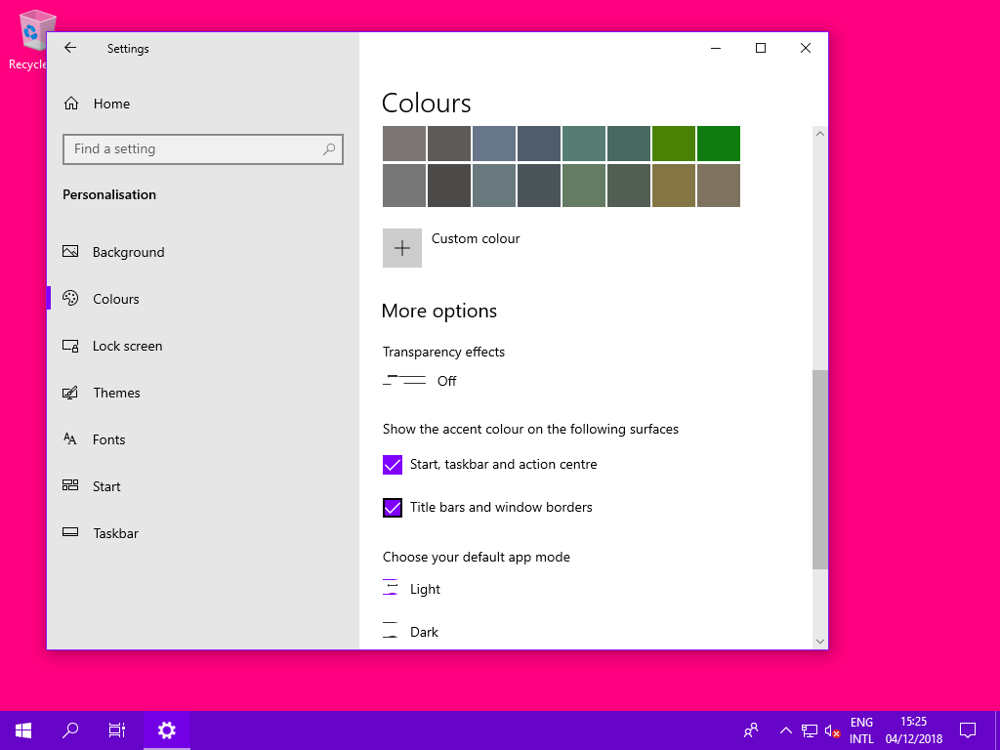
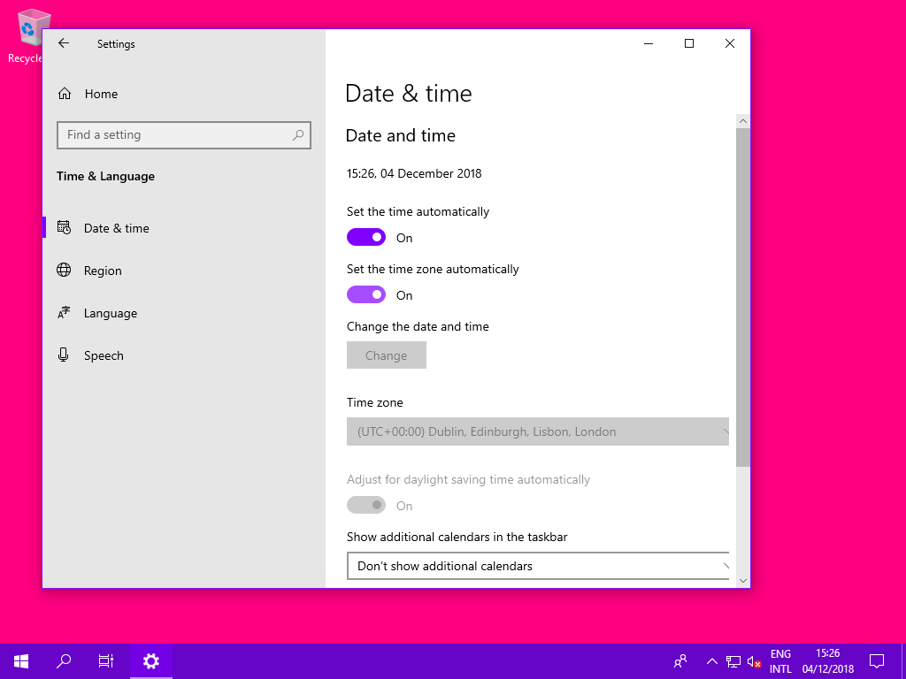

Windows 10 LTSC 2019
Hello! I am Katja. I will assume you know some basic computer things. You can still get stuck, but I will assume you know how to open the start menu. We need to get a copy of Windows 10 LTSC 2019, motherboard firmware, drivers, and of course a backup. It's going to take anywhere from 30 minutes to like a Saturday afternoon, but at least you'll be fine for the next bunch of years! I highly recommend you to read through this page before starting!
- Intro
- Backing up
- Getting drivers & Windows
- Motherboard
- Installation
- Post-installation
- Recommendations
Backing up
Get 7-Zip from here, or if you're from far in the future, then you can maybe also get it from here. Go to This PC or My Computer or something depending on language and Windows version, and right-click your C:\ drive. Choose 7-Zip (Zstandard)→Add to archive…. You can choose from uncompressed, and compressed, depending on your free disk space and how often you think you will be coming back to your backup. I recommend going for uncompressed for now. Set the target location on a secondary drive with enough storage for your backup, and set the settings like so:
Or if you want to have compression, set it like so:
Getting drivers & Windows
Download SDI to your secondary drive using this torrent. And obtain a copy of Windows 10 LTSC 2019. The screenshots in here will be using SW_DVD5_WIN_ENT_LTSC_2019_64-bit_English_International_MLF_X21-96427.ISO, your language might differ. Now get Rufus from here, and plug in a USB flash drive. Open Rufus, select your copy of Windows, and choose the settings like following (note: if you use a smaller drive, then "Cluster size" might be different) and hit start:

Motherboard
Find your motherboard model if you don't already know it. Run msinfo32.exe in the start menu, and look at "System Model", look that model up on the internet and download the latest drivers and follow the installation instructions. Optionally reboot your computer to your motherboard firmware settings and check if you are not already up-to-date, because then you obviously don't have to update. You may ask if it's really necessary to update? Yes it is! Motherboards are often not perfect at release, and through things Advanced Configuration and Power Interface (ACPI) improvements—which include Differentiated System Description Table (DSDT) updates, Secondary System Description Table (SSDT) updates, and Static Resource Affinity Table (SRAT) updates—you can get yourself a non-negligible amount of increased performance, cooling, stability, and security.
Installation
Once you've updated your motherboard firmware, made sure you have your Windows installation material at hand, the driver tool downloaded to your secondary drive, and said your goodbyes to your current Windows installation, make sure to remove all hard disk drives and solid-state drives except for your main one inside the computer case, and remove any internet cables from your computer. Go restart and boot into your installation medium using F11, F12, or some other keyboard key. Once booted into the installation, use shift+F10 and follow the instructions on the screenshot. You should only see the one disk; your C:\ drive, and maybe your USB flash drive.
Now reboot to your motherboard firmware. Find the setting to reset to defaults. Now reboot, and go back to your firmware settings, then search the settings to boot only UEFI, not Legacy, then find storage settings to make sure AHCI or NVMe is set, instead of IDE or RAID. Find in your memory or overclocking settings the option to enable XMP if you're on a desktop computer, and if there's an eco section, you can turn those options on. Reboot back into your installation medium. Follow the steps and choose your options if they're not in one of the images below. Make sure to not connect to any networks and have your internet cable out.
 

Post-installation
Now we'll go through drivers, activation, and some basic things to make it all good.
Shut down your computer and connect your secondary drive. Boot back into Windows and run SDI_auto.bat from your secondary drive. In the top-right, choose Select all and then Install. Let it run and reboot your computer, then connect up to the internet and follow the activation instructions provided to you, perhaps running a file called activation.bat as administrator! Open the settings app and go to Ease of Access and turn the 3 options off as in the screenshot below:
Go to the Gaming section and disable the game bar like so:
Now open the File Explorer, and double-click "View", and check the boxes like in the screenshot below. Then double-click "View" to hide it again.
Recommendations
Let's go get some extra essentials and spruce Windows up! Download Disable_Lock_Screen.reg and Restore_Windows_Photo_Viewer_ALL_USERS.reg and launch them, then merge them. Download vcredist_x86.exe and install it. Go to your C:\ drive and create a new folder called Path there. Open the Start menu and type SystemPropertiesAdvanced.exe, click Environment Variables…, navigate to the Path like in the image below, choose Edit…, in the next window select New, then add C:\Path to the list like in the second image below.
Get the path.exe file and extract it into the C:\Path folder. Double-click mpvbootstrap.bat from inside there, get all the things, then in the new C:\Path\installer folder, right-click mpv-install.bat and Run as administrator.
Go back to the Settings app. Rapid fire through the following things: (if you want to disable mouse acceleration: Devices→Mouse→Related settings→Additional mouse options→Pointer Options→Enhance pointer precision and uncheck that) Personalisation→Lock screen→Off and have fun with all the colours, Apps→Default apps→Photo viewer: Photo viewer;Music player: mpv;Video player: mpv, Apps->Start-up→Disable all, Date & time→On.
If you use Firefox, then you can transfer your browser profile from your backup, to the new installation. It's easy! Get 7-Zip again, install it, then on your secondary drive open the backup you made. Go to C:\Users\username\AppData\Roaming and extract your Mozilla folder to the same location on your new installation. Do the same for the Mozilla folder in C:\Users\username\AppData\Local, then get Firefox and it's like you never changed anything!